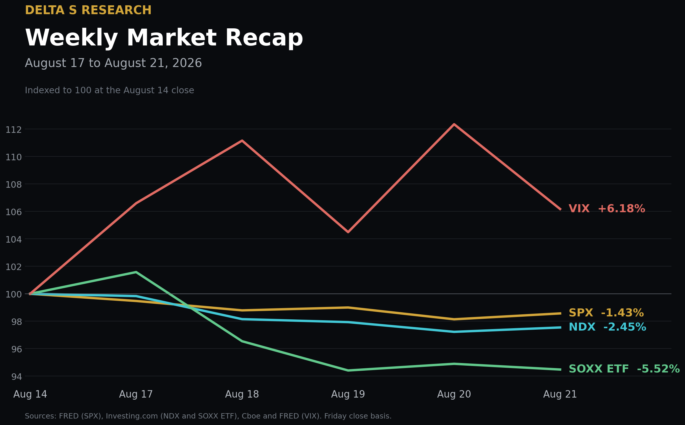
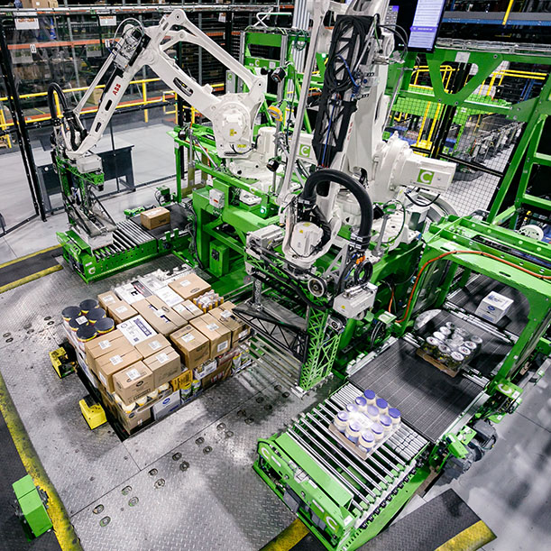
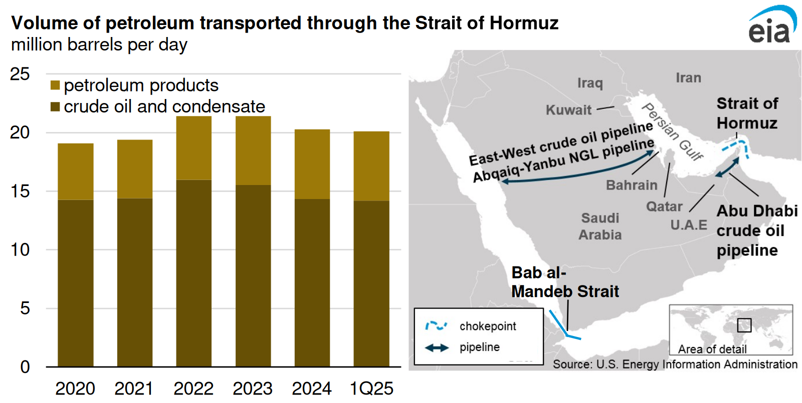

The Week in Five Bullets
- The weekly loss was concentrated in long-duration equity rather than the whole index. SPX fell 1.43% from the August 14 close, while NDX declined 2.45% and the SOXX ETF lost 5.52%. DJIA fell 0.85%, leaving the gap between semiconductor and broad-market performance as the clearest equity signal.
- Long-end yields finished higher despite a forceful midweek rally. The 10-year Treasury par yield closed Friday at 4.74%, up 6 bp for the week, and the 30-year closed at 5.27%, up 2 bp. Wednesday's buyback announcement briefly lowered long yields by roughly 10 bp, but it did not reverse the weekly increase.
- Retail earnings separated operating execution from aggregate demand. Walmart U.S. comparable sales rose 2.6%, below the 3.8% market consensus, and the shares declined 9% on Thursday. Target delivered 3.8% comparable growth with traffic up 3.6%, while Home Depot posted 1.7% comparable growth.
- Hard assets and digital scarcity outperformed a weaker dollar. DXY fell 0.87%, while Brent settled at US$94.39 per barrel and WTI at US$87.06, up 6.39% and 5.66% for the week. Spot gold gained more than 5%, and the Coinbase BTC/USD daily close rose 24.08% to US$78,126.63.
- Index volatility remained contained, but the cross-section stayed expensive. VIX closed at 15.13, 0.88 volatility point above the prior Friday. DSPX 30-day implied dispersion ended at 34.9 while COR1M one-month implied correlation closed at 8.34, a combination consistent with high single-name uncertainty and limited index-level co-movement.

The Week's Dominant Narrative
- The market charged a higher discount rate to the semiconductor complex. SOXX underperformed SPX by 4.09 percentage points for the week, and NDX underperformed by 1.02 points. The move matters because the sector now carries both earnings sensitivity and financing-duration sensitivity into NVIDIA's August 26 results.
- Treasury buybacks improved liquidity mechanics without changing the fiscal stock. Starting September 9, Treasury will raise the maximum size of each 10-year to 20-year and 20-year to 30-year liquidity-support buyback from US$2 billion to at least US$4 billion. The operation can reduce balance-sheet friction in off-the-run bonds, but it does not retire net debt or alter the maturity profile of new issuance.
- The consumer is still spending, but the mix is narrower and more price-sensitive. Walmart e-commerce sales grew 24% and the company funded 11,000 price reductions partly with US$2.9 billion of tariff refunds. Target's 3.8% comparable-sales gain came almost entirely from 3.6% higher traffic, while Home Depot's 1.7% comparable gain remained consistent with restrained big-ticket renovation demand.
- Tariff refunds improved reported earnings but reduced comparability. Target recorded a US$994 million pretax tariff refund that contributed US$752 million to net income and US$1.65 to earnings per share. That benefit is economically real, yet it should be separated from recurring merchandising margin and operating leverage when assigning a valuation multiple.
- AI equity risk is increasingly linked to credit-market capacity. AI-related U.S. corporate debt issuance reached US$220 billion in 2026, versus US$12.5 billion a year earlier, while technology bond spreads reached 89 bp. NVIDIA's report will therefore test not only chip demand, but also whether customer cash flow and credit spreads can support the next capex leg.
What Volatility Markets Priced
- The VIX response was measured relative to the equity drawdown. VIX rose from 14.25 to 15.13 as SPX lost 1.43%. Friday's 15.13 close remained below the 16.01 Thursday close, so the week ended with more hedging demand than on August 14 but without a disorderly index-option repricing.
- Implied volatility retained a premium to the latest realized path. Five-session SPX realized volatility was 9.14%, calculated from daily close-to-close log returns with sample standard deviation and a square-root-of-252 annualization. VIX exceeded that backward-looking measure by 5.99 volatility points; the short window makes the estimate responsive, not structural.
- The futures curve priced event risk above spot. The September VIX future settled at 17.8009, 2.67 points above spot; October settled at 19.4505 and November at 20.1489. That upward curve prices risk into late summer and autumn while preserving a positive roll cost for a static long-volatility position.
- Low implied correlation kept index volatility below single-name uncertainty. COR1M one-month implied correlation closed at 8.34, up from 7.45 on August 14 but still low in absolute terms, while DSPX implied dispersion ended at 34.9. The structure leaves short index-volatility trades exposed to a sudden correlation increase even if individual earnings gaps initially offset one another.
- Rates and equities did not deliver the usual hedge symmetry. The 10-year yield rose 6 bp and the 30-year rose 2 bp in the same week that SPX declined. Portfolios that rely on long Treasuries to offset equity duration therefore carried positive stock-bond correlation risk, even as VIX remained near 15.
Cross Asset Signals
- The 10-year yield closed at 4.74%. The 6 bp weekly increase kept the equity discount rate elevated after Wednesday's liquidity-driven rally. The close, rather than the midweek low, is the more relevant input for weekend valuation work.
- The 30-year yield traversed a 12 bp weekly range. It moved from 5.31% on Monday to 5.19% on Wednesday and finished at 5.27%. The reversal shows that buyback support can improve market function without eliminating term-premium pressure.
- Oil repriced current transport availability, not only future supply. Brent and WTI settled at US$94.39 and US$87.06 per barrel, up 6.39% and 5.66%. Only seven commodity vessels crossed Hormuz on Thursday, half Wednesday's count, which ties the price move to observed transit constraints.
- Dollar weakness coincided with stronger monetary hedges. DXY fell from 99.67 to 98.80, a 0.87% decline. Spot gold was US$4,623.94 per troy ounce at 1:41 PM ET Friday after gaining more than 5% for the week; COMEX futures settled at US$4,680.60.
- Bitcoin moved further than gold on a venue-defined series. The Coinbase BTC/USD daily close was US$78,126.63 on August 21, up 24.08% from August 14. The move combined a weaker dollar with ETF demand, but its magnitude also reflects short covering after a compressed trading range.
- Fund flows did not confirm a broad liquidation. For the week through August 19, U.S. equity funds received US$11.72 billion, including US$9.58 billion into large-cap funds, while U.S. bond funds received US$9.92 billion. Sector funds lost US$3.10 billion even as technology funds took in US$287 million, pointing to reallocation rather than wholesale withdrawal.
- Policy communication kept inflation persistence in the distribution. The July FOMC minutes showed a growing number of participants concerned that inflation could remain elevated. Treasury's buyback expansion addresses secondary-market liquidity, so it should not be read as a change in the Fed's inflation reaction function.

Structural Fragilities
- A low VIX and a rising long bond remain a fragile portfolio combination. Index options ended the week at 15.13 while the 10-year and 30-year yields rose. An inflationary or fiscal shock can lower both Treasury and long-duration equity prices before an equity hedge financed by low implied volatility becomes profitable.
- Short index volatility embeds a correlation bet. Implied correlation at 8.34 allows large single-name moves to offset inside SPX. If NVIDIA or another high-weight constituent turns an idiosyncratic event into a sector-wide capex revision, correlation can rise faster than dispersion falls.
- Retail margin quality now depends partly on nonrecurring policy cash flows. Target's US$994 million pretax tariff refund and Walmart's US$2.9 billion of refunds improved reported economics and enabled price investment. A valuation model that capitalizes those benefits as recurring operating margin would overstate normalized earnings power.
- The AI capex cycle now carries a financing feedback loop. AI-related corporate issuance reached US$220 billion while technology spreads widened to 89 bp. If spreads widen further, customer hurdle rates rise, slower capex then weakens chip revenue expectations, and lower equity values can tighten financing conditions again.
- A benign energy path still assumes bypass capacity that is structurally limited. Available estimates put spare Saudi and UAE pipeline capacity at about 2.6 million barrels per day, versus roughly 20 million barrels per day of Hormuz oil flows in 2024. The comparison is structural, not a current traffic estimate, but it shows why normalization cannot be inferred from one day of vessel data.
- A low index-volatility print can coexist with expensive single-name uncertainty when correlation, not risk, is being sold.
What We Are Watching Next
- Tuesday, August 25, 10:00 AM ET: July new-home sales will show whether mortgage-rate pressure is reaching transaction volumes before it reaches construction employment.
- Tuesday, August 25, 4:30 PM ET: Intuit fiscal fourth-quarter results will test small-business activity, tax-platform pricing and the pace of AI monetization in financial software.
- Wednesday, August 26, 8:30 AM ET: The second estimate of second-quarter GDP and the first corporate-profit estimate will refine the split between real growth, margins and inventory accumulation.
- Wednesday, August 26, 8:30 AM ET: July personal income and outlays, including PCE inflation, will determine whether oil and tariff pass-through are entering the consumption deflator.
- Wednesday, August 26, 8:30 AM ET: July durable-goods orders will separate aircraft volatility from core capital-goods demand and provide a cleaner read on business investment.
- Wednesday, August 26, 2:00 PM PT: NVIDIA fiscal second-quarter results will test accelerator demand, rack-scale deployment timing, gross-margin durability and customer financing capacity.
- Wednesday, August 26, 2:00 PM PT: Salesforce and CrowdStrike report after the close, offering a paired read on enterprise software budgets, security demand and AI-related operating leverage.
- Thursday, August 27 to Saturday, August 29, time to be confirmed: The Jackson Hole symposium on financial innovation, payments and policy can reset the market's interpretation of inflation persistence and Treasury-market plumbing.
Sources and References
- Equities: FRED: S&P 500 daily close
- Equities: Investing.com: Nasdaq 100 historical data
- Equities: BlackRock and Investing.com: SOXX ETF data
- Market recap: Reuters: U.S. stocks close higher Friday but lower for the week
- Volatility: Cboe: VIX spot index
- Volatility: Cboe: daily VIX futures settlements
- Volatility: Cboe: S&P 500 Dispersion Index
- Volatility: Cboe: one-month implied correlation index
- Rates: U.S. Treasury: daily par yield curve rates
- Rates: U.S. Treasury: expanded liquidity support buybacks
- Policy: Federal Reserve: minutes of the July 28 to July 29 meeting
- Retail: Walmart: fiscal 2027 second-quarter earnings release
- Retail: Reuters: Walmart comparable-sales miss and tariff refunds
- Retail: Target: second-quarter 2026 earnings release
- Retail: Home Depot: second-quarter 2026 earnings release
- AI financing: Reuters: U.S. corporate AI debt issuance and credit spreads
- Oil: Reuters: Brent and WTI weekly performance and Hormuz traffic
- Energy routes: U.S. EIA: Hormuz flows and pipeline alternatives
- Dollar: Investing.com: U.S. Dollar Index historical data
- Gold: Reuters: spot and COMEX gold prices
- Bitcoin: FRED: Coinbase Bitcoin in U.S. dollars
- Fund flows: Reuters and LSEG Lipper: U.S. weekly fund flows
- Calendar: BEA: release schedule
- Calendar: U.S. Census Bureau: economic indicators calendar
- Calendar: NVIDIA: events and presentations
- Calendar: Intuit: investor relations calendar
- Calendar: Salesforce: second-quarter fiscal 2027 earnings webcast
- Calendar: CrowdStrike: investor relations
- Calendar: Federal Reserve Bank of Kansas City: Jackson Hole symposium